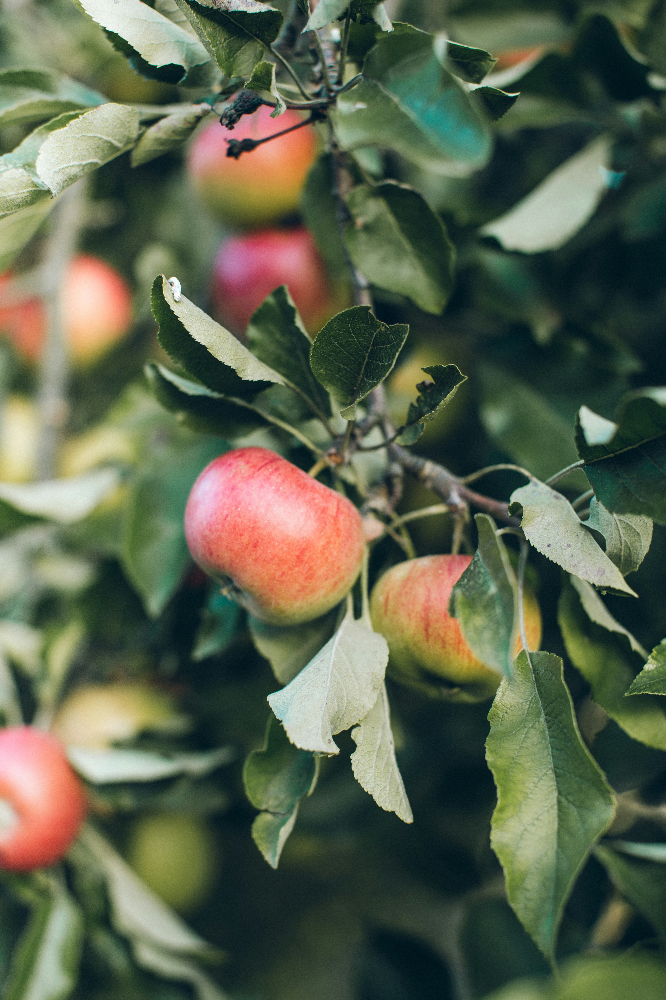
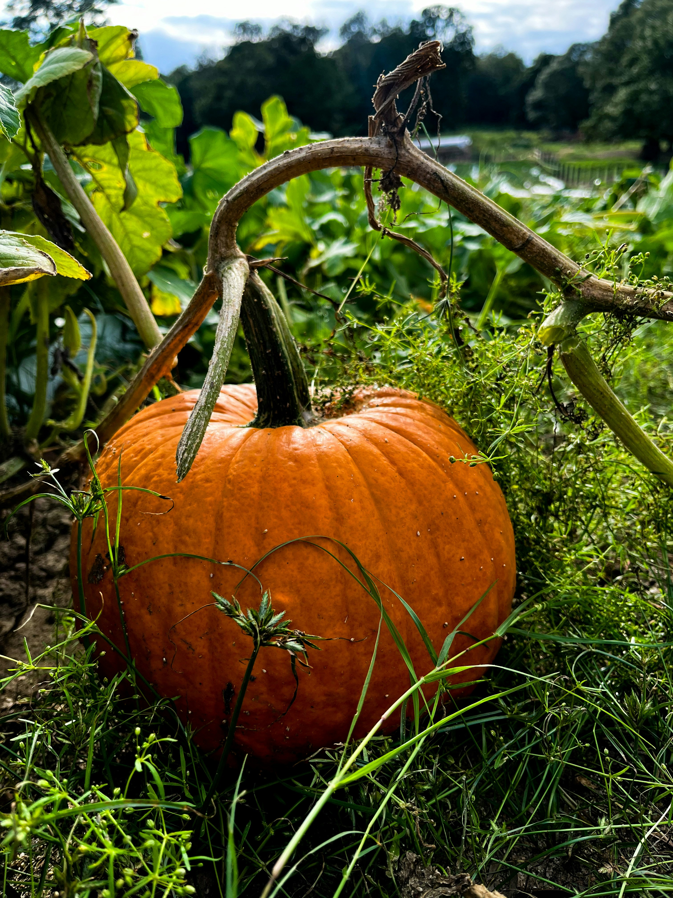

🌿 Pflanzen & Gewächse
In unserem Garten wachsen viele verschiedene Pflanzen, Obst- und Gemüsesorten. Hier findest du interessante Informationen zu verschiedenen Gewächsen und erfährst, wo sie am besten wachsen, wann sie gepflanzt und geerntet werden und wie sie verwendet werden können.
Klicke einfach auf eine Pflanze, um weitere Informationen und mehrere Bilder zu sehen.

🍎 Apfelbaum
Malus domestica
Obst • Sonne / Halbschatten

🎃 Kürbis
Cucurbita
Gemüse • Sonniger Standort

🍓 Erdbeeren
Fragaria × ananassa
Obst • Sonne / Halbschatten

🥔 Kartoffeln
Solanum tuberosum
Gemüse • Sonniger Standort

🍅 Tomaten
Solanum lycopersicum
Gemüse • Sonnig und warm

🥕 Möhren
Daucus carota
Gemüse • Sonne / Halbschatten

🫑 Paprika
Capsicum annuum
Gemüse • Sonnig und warm

🧅 Zwiebeln
Allium cepa
Gemüse • Sonniger Standort

🥦 Brokkoli
Brassica oleracea var. italica
Gemüse • Sonne / Halbschatten

🥒 Zucchini
Cucurbita pepo
Gemüse • Sonniger Standort

🫐 Heidelbeeren
Vaccinium corymbosum
Obst • Sonne / Halbschatten

🍒 Johannisbeeren
Ribes
Obst • Sonne / Halbschatten

🍓 Himbeeren
Rubus idaeus
Obst • Sonne / Halbschatten

🍐 Birnbaum
Pyrus communis
Obst • Sonne / Halbschatten

🍒 Kirschbaum
Prunus avium
Obst • Sonniger Standort

🍇 Weinrebe
Vitis vinifera
Obst • Sonnig und warm